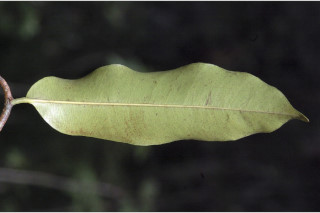
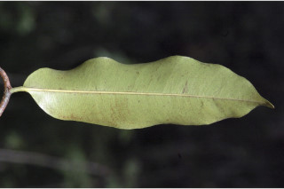
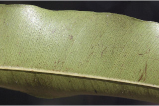
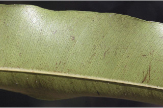

Trees up to 30 m tall.
30 ಮೀ ಎತ್ತರದವರೆಗಿನ ಗಾತ್ರದ ಮರಗಳು.
Trees up to 30 m tall.
மரங்கள் 30 மீ. உயரம் வரை வளரக்கூடியது.
Bark dark grey, with longitudinally arranged corky lenticels; blaze cream.
ತೊಗಟೆ ಕಡು ಬೂದು ಬಣ್ಣದಲ್ಲಿದ್ದು ಉದ್ದನೆಯ ಸಾಲಿನಲ್ಲಿ ಜೋಡಿತವಾದ ಬೆಂಡುರೂಪದ ವಾಯುವಿನಿಮಯ ರಂಧ್ರಗಳನ್ನು ಹೊಂದಿರುತ್ತದೆ;ಕಚ್ಚು ಮಾಡಿದ ಜಾಗ ಕೆನೆ ಬಣ್ಣ ಹೊಂದಿರುತ್ತದೆ.
Bark dark grey, with longitudinally arranged corky lenticels; blaze cream.
மரத்தின் பட்டை கரும்சாம்பல் நிறமானது, பட்டைத்துளைகள் (லெண்டிசெல்லேட்) கார்க் போன்றது மற்றும் நீள்வாக்கில் அமைந்தவை; உள்பட்டை கீரிம் நிறமானது.
Young branchlets terete, rusty tomentose, later glabrous.
ಎಳೆಯ ಕಿರುಕೊಂಬೆಗಳು ದುಂಡಾಗಿದ್ದು ತುಕ್ಕು ಬಣ್ಣದ ದಟ್ಟ ಮೃದು ತುಪ್ಪಳದಿಂದ ಕೂಡಿರುತ್ತವೆ,ನಂತರ ರೋಮರಹಿತವಾಗುತ್ತವೆ.
Young branchlets terete, rusty tomentose, later glabrous.
சிறியநுனிக்கிளைகள் குறுக்குவெட்டுத் தோற்றத்தில் வளையமானது, துருப்போன்ற உரோமங்களுடையது, முதிரும் போது உரோமங்களற்றது.
Latex white, profuse.
ಎಲೆಗಳು ಸರಳವಾಗಿದ್ದು ಪರ್ಯಾಯ ಜೋಡನಾ ವ್ಯವಸ್ಥೆಯಲ್ಲಿದ್ದು ಕಾಂಡದ ಎರಡೂ ಕಡೆ ಎದುರು ಬದರಿನ ಲಂಬ ಸಾಲಿನಲ್ಲಿರುತ್ತವೆ;ತೊಟ್ಟು 0.5 – 0.8 ಸೆಂ.ಮೀ.ವರೆಗಿನ ಉದ್ದವಿದ್ದು, ಕಾಲುವೆಗೆರೆಯನ್ನು ಹೊಂದಿದ್ದು ಎಳೆಯದಾಗಿದ್ದಾಗ ಮೃದುತುಪ್ಪಳ ಸಹಿತವಿದ್ದು ನಂತರ ರೋಮರಹಿತವಾಗಿರುತ್ತದೆ; ಪತ್ರಗಳು 7 -15 X 2–4 ಸೆಂ.ಮೀ. ಗಾತ್ರ,ಸಂಕುಚಿತ ಚತುರಸ್ರದಿಂದ ಅಂಡವೃತ್ತ-ಚತುರಸ್ರದವರೆಗಿನ ಆಕಾರ ಹೊಂದಿದ್ದು, ಮೊಂಡಾಗ್ರವುಳ್ಳ ಬಾಲರೂಪಿ- ಕ್ರಮೇಣ ತುದಿ,ಕೊಂಚ ಅಸಮ್ಮಿತಿಯಾದ ಮತ್ತು ಒಳಬಾಗಿದ ಬುಡ, ತರಂಗಿತವಾದ ಅಂಚು,ಉಪ- ತೊಗಲನ್ನೋಲುವ ಮತ್ತು ಹೊಳಪನ್ನುಳ್ಳ ಮೇಲ್ಮೈ ಹೊಂದಿದ್ದು ಬಲಿತಾಗ ರೋಮರಹಿತವಾಗಿರುತ್ತವೆ ;ಮಧ್ಯನಾಳ ಪತ್ರದ ಮೇಲ್ಭಾಗದಲ್ಲಿ ಚಪ್ಪಟೆಯಾಗಿರುತ್ತದೆ;ಅಂತರ ಅಂಚಿನ ನಾಳಗಳು ಇರುತ್ತವೆ; ಎರಡನೇ ದರ್ಜೆಯ ನಾಳಗಳು ಹಲವಾರು ಇದ್ದು,ಕಡಿಮೆ ಅಂತರ ಹೊಂದಿರುತ್ತವೆ ಮತ್ತು ಎರಡನೇ ದರ್ಜೆಯ ನಡುವಿನ ನಾಳಗಳಿಗೆ ಸಮಾನಾಂತರವಾಗಿರುತ್ತವೆ;ಮೂರನೇ ದರ್ಜೆಯ ನಾಳಗಳು ಜಾಲಬಂಧ ನಾಳ ವಿನ್ಯಾಸಲ್ಲಿರುತ್ತವೆ.
Latex white, profuse.
வெள்ளை நிற பால் அதிகளவு சுரக்கிறது.
Leaves simple, alternate, distichous; petiole 0.5-0.8 cm long, canaliculate, pubescent when young, later glabrous; lamina 7-15 x 2-4 cm, narrow oblong to elliptic-oblong, apex caudate - acuminate with blunt tip, base slightly asymmetric and attenuate, margi
ಪುಷ್ಪಮಂಜರಿಗಳು ಅಕ್ಷಾಕಂಕುಳಿನಲ್ಲಿನ ದಟ್ಟವಾದ ಗುಚ್ಛಗಳಲ್ಲಿರುತ್ತವೆ;ಹೂಗಳು ಬಿಳಿ ಬಣ್ಣ ಹೊಂದಿರುತ್ತವೆ;ತೊಟ್ಟುಗಳು 0.3 – 0.5 ಸೆಂ.ಮೀ ಉದ್ದವಿರುತ್ತವೆ.
Leaves simple, alternate, distichous; petiole 0.5-0.8 cm long, canaliculate, pubescent when young, later glabrous; lamina 7-15 x 2-4 cm, narrow oblong to elliptic-oblong, apex caudate - acuminate with blunt tip, base slightly asymmetric and attenuate, margi
இலைகள் தனித்தவை, மாற்றுஅடுக்கமானவை, இருநெடுக்கு வரிசையிலையடுக்கம் (டைஸ்டிக்கஸ்); இலைக்காம்பு 0.5-0.8 செ.மீ. நீளமானது, குறுக்குவெட்டுத் தோற்றத்தில் கேனாலிகுலேட், இளம்பருவத்தில் உரோமங்களுடையது, முதிரும் போது உரோமங்களற்றது; இலை அலகு 7-15 X 2-4 செ.மீ., குறுகிய நீள்சதுர வடிவானது முதல் நீள்வட்டம்-நீள்சதுர வடிவானது, அலகின் நுனி வால் - சிறிது அதிக்கூரியதுடன் அதன் முனை மழுங்கியது, அலகின் தளம் சிறிது சமமற்றது மற்றும் அட்டனுவேட், அலகின் விளிம்பு அலை போன்றது, சப்கோரியேசியஸ், அலகின் மேற்பரப்பு பளபளப்பானது, முதிரும் போது உரோமங்களற்றது; மையநரம்பு மேற்புறத்தில் அலகின் பரப்பிற்கு சமமானது; இண்ட்ராமார்ஜினல் நரம்பு (விளிம்பு நரம்பு) கொண்டது; இரண்டாம் நிலை நரம்புகள் எண்ணற்றது, நெருக்கமான மற்றும் இணையானவை, மற்றும் இரண்டாம் நிலை நரம்புகள் கிடைப்பட்ட நரம்புகளுடையது; மூன்றாம் நிலை நரம்புகள் வலைப்பின்னல் போன்றவை.
Inflorescence axillary dense clusters; flowers white; pedicel 0.3-0.5 cm long.
ಬೆರ್ರಿ ಗೋಳಾಕಾರದಲ್ಲಿದ್ದು, 2.5 – 3.5 ಸೆಂ.ಮೀ ಅಡ್ಡಗಲತೆ ಹೊಂದಿದ್ದು, 5 – 6 ಕೋಶಗಳ ಸಮೇತವಿರುತ್ತವೆ;ಬೀಜಗಳು 1 ಇದ್ದು,ಕಂದು ಬಣ್ಣದಲ್ಲಿದ್ದು ಹೊಳಪನ್ನು ಹೊಂದಿರುತ್ತವೆ ಮತ್ತು 1.9 ಸೆಂ.ಮೀ.ವರೆಗಿನ ಉದ್ದವಿರುತ್ತವೆ.
Inflorescence axillary dense clusters; flowers white; pedicel 0.3-0.5 cm long.
மஞ்சரி இலைக்கோணங்களில் காணப்படுபவை, அடர்த்தியான தொகுப்பாகமைந்தவை; மலர்கள் வெள்ளை நிறமானது; மலர்காம்பு 0.3-0.5 செ.மீ. நீளமானது.
Berry, globose 2.5-3.5 cm across, 5-6 locular; seed 1, brown, shining, to 1.9 cm long.
Berry, globose 2.5-3.5 cm across, 5-6 locular; seed 1, brown, shining, to 1.9 cm long.
முழுச்சதைகனி (பெர்ரி), கோள வடிவமானது 2.5-3.5 செ.மீ. குறுக்களவுடையது, 5-6 அறைகளுடையது; விதைகள் 1, ப்ரவுன், பளபளப்பானது, 1.9 செ.மீ. நீளமானது.

 


 
